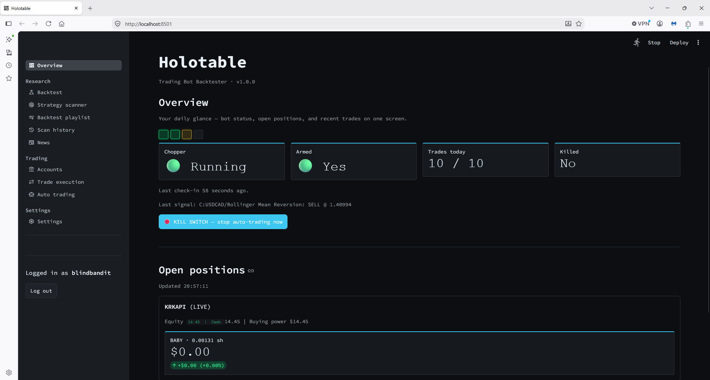
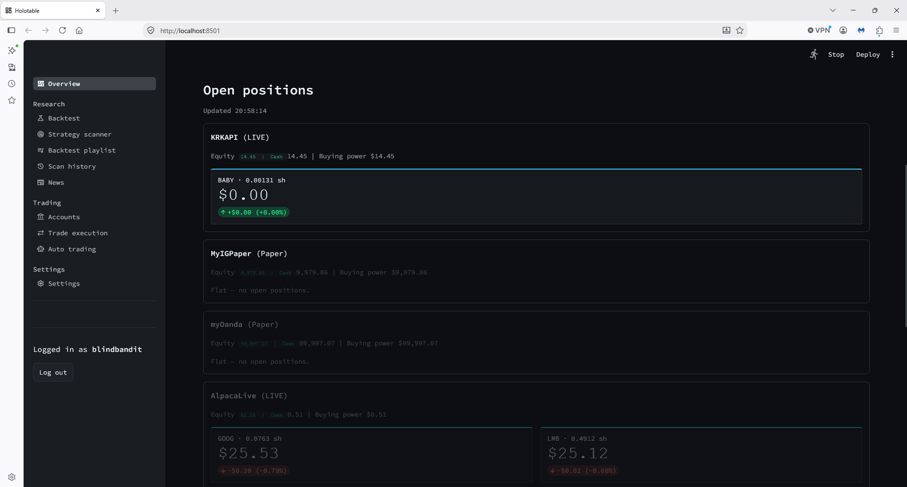
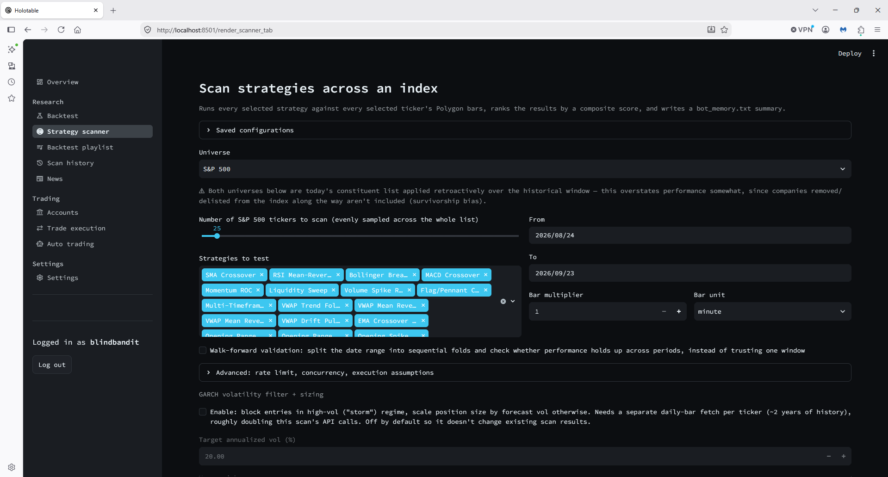
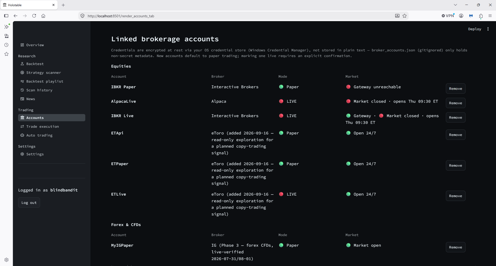

Case Study
A continuously-running trading system integrating six real brokerage APIs across equities, FX, and crypto, with an adaptive strategy-selection framework where nothing reaches live trading without first clearing a rigorous backtest gate.
Currency-mismatch bug causing incorrect order sizing on a live account, traced to a data source silently mislabelling one currency as another. Fixed and covered by a dedicated regression test before being trusted again.
Ticker-translation bug preventing the system from recognising its own open positions after a broker returned asset identifiers in a different format than expected.
Supervisor/watchdog architecture that detects process failures and automatically recovers them, keeping a live, continuously-running system up without manual intervention.
A session-handling limit in a broker's own infrastructure (a live and practice-account connection cannot run concurrently under one login), confirmed by direct, controlled testing rather than accepting the first plausible explanation.




Packaged the trading system into a fully standalone Windows installer requiring no separate Python install, the kind of distribution and deployment engineering most junior portfolios don't touch at all.
Multiple bugs that only existed in the frozen build, invisible in source: a UI framework silently 404ing on static assets, and a module-resolution crash. Each root-caused by actually running the compiled executable, not by trusting a clean build.
End to end via a real install → launch → uninstall cycle on a clean machine state, not just a successful compile.
Reverse-engineered an undocumented third-party trading API directly from its primary developer docs, then built a signal engine that ranks real traders on a composite, risk-adjusted score before anything is acted on.
A poll/diff engine that tracks a watchlist's real position changes and turns them into structured trading signals.
A sector-concentration hypothesis walk-forward across multiple time windows before it was allowed to influence a live strategy roster, not on a single lucky backtest.